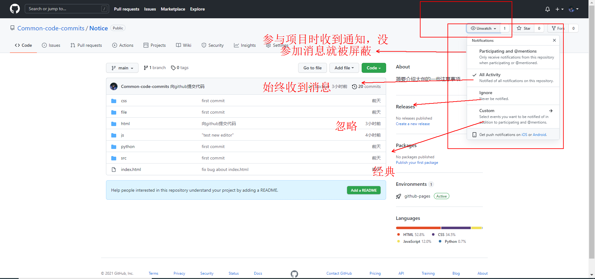
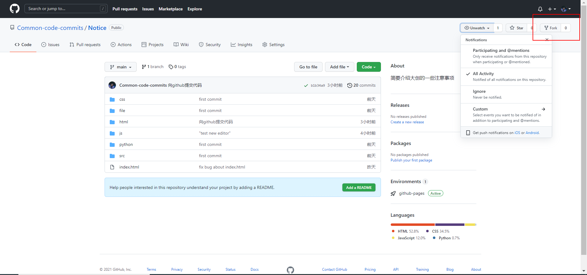
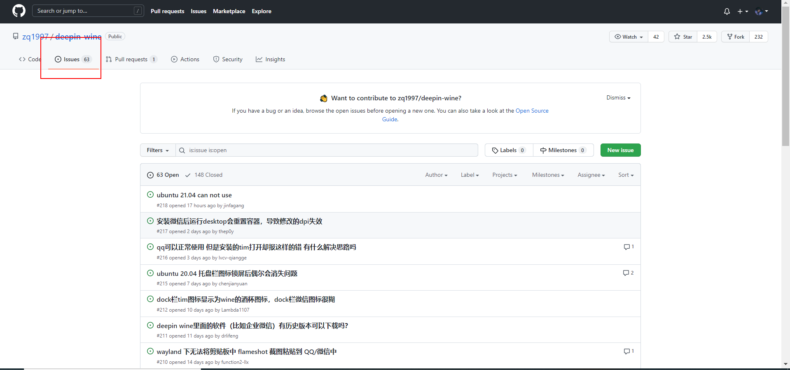

{{ value.name }}
git push origin main
watch翻译为本地化就是关注，当你选择Watching，表示你以后会关注这个项目的所有动态，以后只要这个项目发生变动，如被别人提交了pull request、被别人发起了issue等等情况，你都会在自己的个人通知中心，收到一条通知消息，如果你设置了个人邮箱，那么你的邮箱也可能收到相应的邮件
star在这里解释为`点赞`或者`收藏`更合适，当你点击 star,表示你喜欢这个项目或者通俗点，可以把他理解成朋友圈的点赞吧，表示对这个项目的支持。
不过相比朋友圈的点赞，github 里面会有一个列表，专门收集了你所有 start 过的项目，
点击 github 个人头像，可以看到 your star的条目，点击就可以查看你 star 过的所有项目了。如下图
当选择 fork，相当于你自己有了一份原项目的拷贝，当然这个拷贝只是针对当时的项目文件，如果后续原项目文件发生改变，你必须通过其他的方式去同步。 一般来说，我们不需要使用 fork 这个功能，除非有一些项目，可能存在 bug 或者可以继续优化的地方，你想帮助原项目作者去完善这个项目或者单纯的想在原来项目基础上己维护一个属于自己项目
可以把它想象成qq空间的评论功能，不过他支持更多格式和功能。
